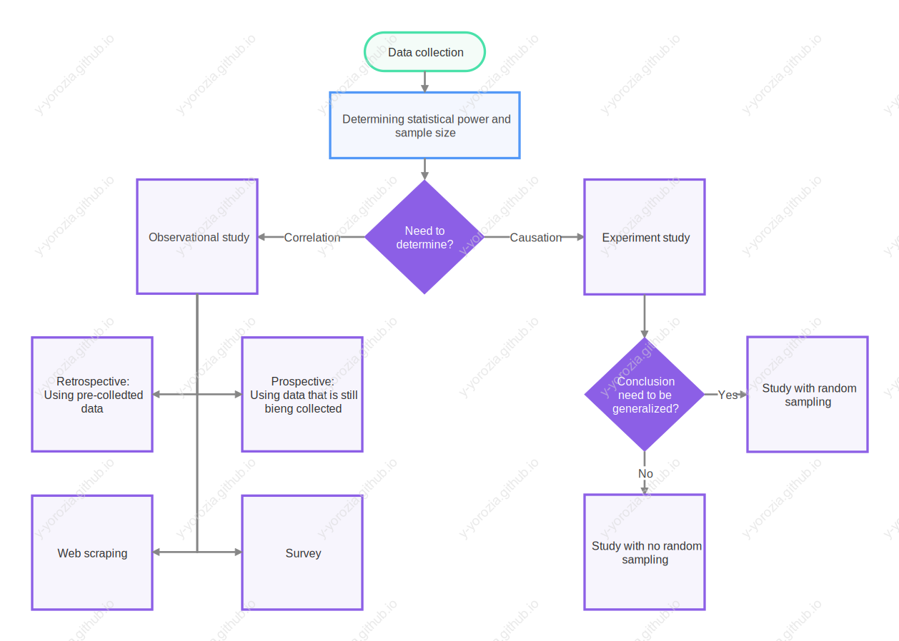
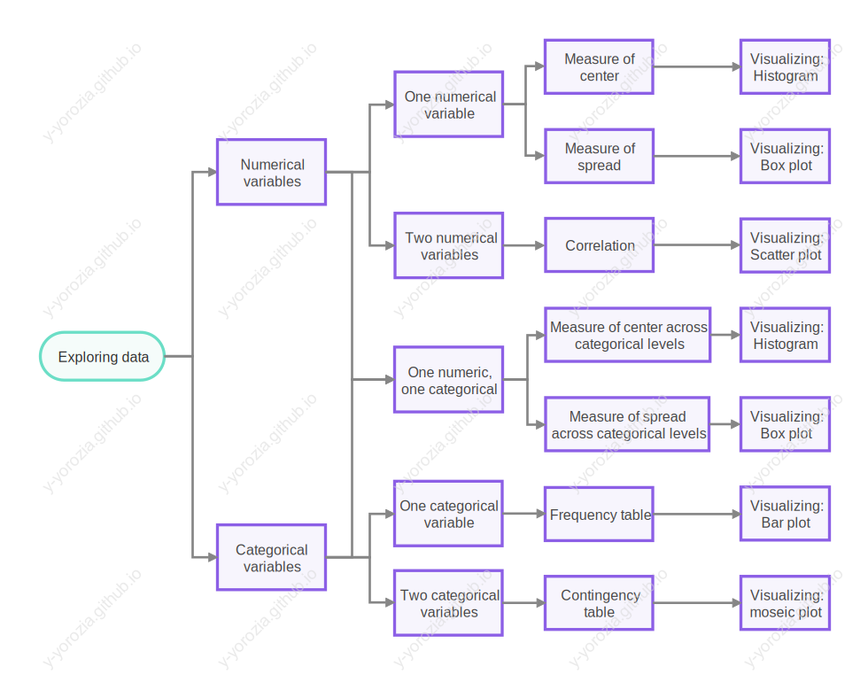
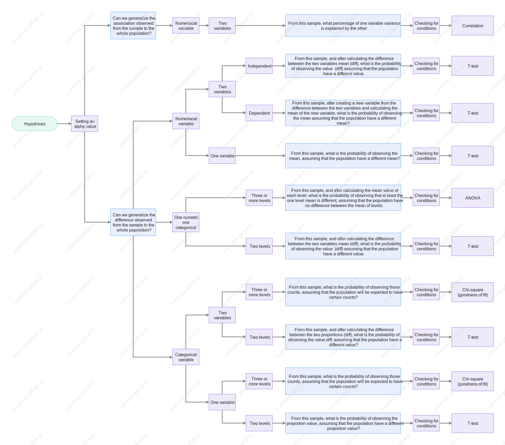

Portfolio
Table of Contents
1. About me
Hello My name is Joseph, I am 26 years old, and I live in Morocco.
I am a self-taught data analyst/scientist who developed an interest in data from watching a Ted Talk by Hans Rosling.
I studied most of the concepts from YouTube, and now I studied on Coursera using auditing.
Currently, I am seeking work with a team, either as a freelancer or an intern.
My last projects involve scraping and developing a metric to ease decision-making.
2. Project
- A script I made recently for an influencer marketing agency that put additional variables in a channels' database from NoxInfluencer.
Those variables are served as a filter, instead of visiting a channel and judging if it is a good fit, you just apply a couple of filters.
This database helped them find potential channels for sponsorship deals five time faster. Project link - A little script that scrapes recipes database, plus images uploaded by users.
All recipes were collected and assigned a score base on rating, when it was published and amount of engagement…
Images were assessed as well with BRISQUE algorithm that returns a score base on image sharpness. Project link A little script that I wrote to add additional filters to a rent website in my country.
There is some basic filter in the search page, but each apartment page have additional information.
- The script is simple:
- Scrape and get all apartment links
- Scrape and get all feature from each apartment
- Decide which apparent I should rent base on low price and high number of features.
- Scrape and get all apartment links
- The script is simple:
3. Workflow
3.1. Data Analysis

3.2. Data collection

3.3. Exploring data

3.4. Hypothesize

4. Notes
I only audited courses on Coursera, All I have are notes to prove it.
- Notes from the Coursera course Excel Skills for Business Specialization
- Notes and a summary diagram from the Coursera course Google Data Analytics Professional Certificate
- Notes from the Coursera course Data Analysis with R Specialization (previously known as Statistics with R)
This note has a lot of math formulas written in \(LaTeX\), it may take a while to load.
5. Tools I use
- Gnu Emacs just a normal text editor.
- Org mode just a normal text format, with an Excel like functionality, the ability to run codes within the note… All the notes that I wrote, especially the notes of statistics with R of which I am very proud of, are writing in org mode format.
Here is an example a note in org mode - Excel
- Jupyter notebbok
- Google colab
- Rstudio
6. What next in my learning journey
- AWS Cloud practitioner
- Data Analytics Learning Plan for AWS Certificate
- Coursera - Microeconomics Principles
- Coursera - Econometrics: Methods and Applications
- Andrew Ng - DeepLearning.AI
- Six Sigma
- CS50’s Introduction to Computer Science
- Udemy - Accelerated Regular Expressions Training - Regex
- Discrete Mathematics with Applications
7. Programing langauges
- Python
Only what is needed for data science, I don't use functions often nor did I ever use classes. You can check my python scripts below. - SQL
Never performs a query, I don't event know what setup is needed, all I know is the syntax. Check my Google data analytics notes. - R
I only used R for statistical computation from the course data analysis with R, It is sad to say this but, I don't event know how to manipulate data frames in R.
8. Library
- Pandas
- Numpy
- sklearn
- beautifulsoup
- selenuim
- Plotly express
- opencv2
- PIQ used in my latest project
9. Contact
Email: yoroziano.youssef@gmail.com
Phone: 0713617633